Lydiana Imagination Solutions — Malawi
Woven by women
A weaver-owned cooperative rebuilding what a Malawian basket is worth.
Lydiana Imagination Solutions — Malawi
A weaver-owned cooperative rebuilding what a Malawian basket is worth.
The gap — why we exist
What a weaver earns for work that fills every hour of daylight. Middlemen hold the market. The maker holds no bargaining power.
The model
Fair pay, design training and direct market access — inside a cooperative the weavers themselves own.
The founder
“We offer them fair wages, design training and cooperative ownership.”
The cooperative
Weavers, quality control, sales and strategy — a Malawian team building a business that belongs to its makers.
Every coil is someone's income
Our story
Lydiana Imagination Solutions is a women-led basket weaving cooperative based in Malawi, founded by Lydia Figuereido.
Malawi's coiled baskets are among the finest handwork in the region. The women who make them are the people who earn least from them. A weaver can fill every hour of daylight and still take home about $48 a month, because the market between her and the buyer is held by middlemen.
The cooperative was built to close that distance. It buys directly from its weavers and pays them fairly. It trains them in design and colour — including the coloured dyes Malawian weavers have not had access to. And it gives them ownership: the women who weave the baskets hold a share of the business that sells them.
Alongside the weaving, the cooperative works in biodiversity — specifically the preservation of indigenous trees, the living material this craft depends on.
“So my business is a cooperative for women basket weavers. We offer them fair wages, design training and cooperative ownership.”
Lydia Figuereido — Founder & CEO
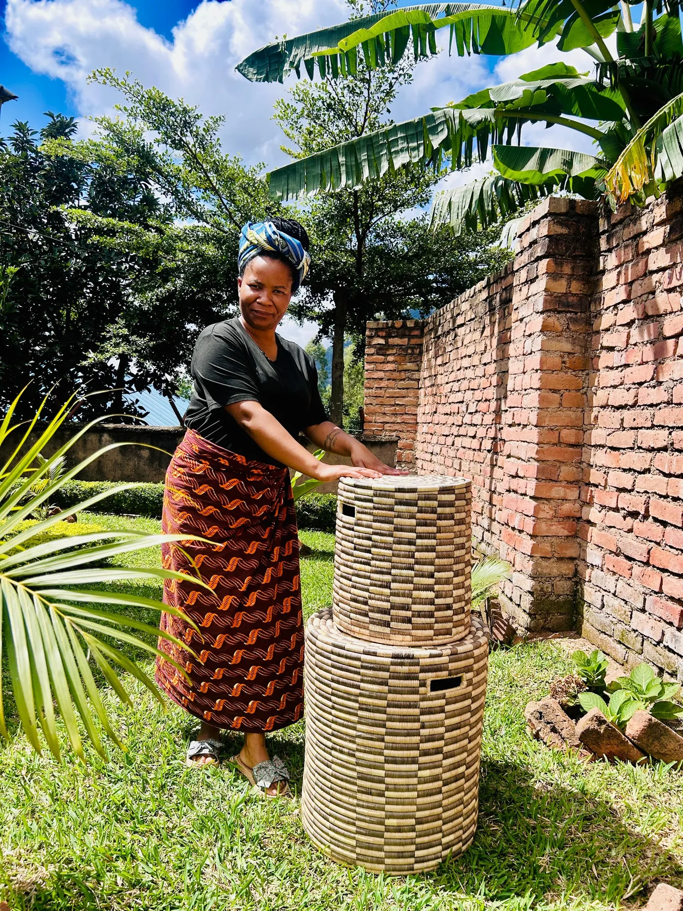
The gap
The weaving is world class. The economics around it are not. These are the numbers the cooperative was built to change.
$48
Typical monthly earnings for a Malawian weaver working full daylight hours
$5M+
Crafts market controlled by middlemen, leaving weavers with zero bargaining power
200,000+
Weavers affected in Malawi
3M+
Weavers affected across Africa
Figures as cited by the cooperative — World Bank Report on Africa, 2022; Expert Market Research, 2025
What we do
A weaver-owned cooperative built on fair pay, training, ownership and the trees the craft depends on.
01
Weavers are paid directly and fairly for every piece, instead of being squeezed by a chain of middlemen who set the price.
02
Training in design and colour — including the coloured dyes Malawian weavers have not had access to — so the work can meet international taste without losing its own language.
03
Members hold a share of the business. The women who weave the baskets own the company that sells them, and share in what it earns.
04
The cooperative works in biodiversity alongside weaving, with a focus on preserving the indigenous trees this craft grows out of.
Craftsmanship
Lidded hampers, wall and serving plates, conical storage baskets and woven hats — coiled by hand, dyed by hand, and made to be displayed as much as used.
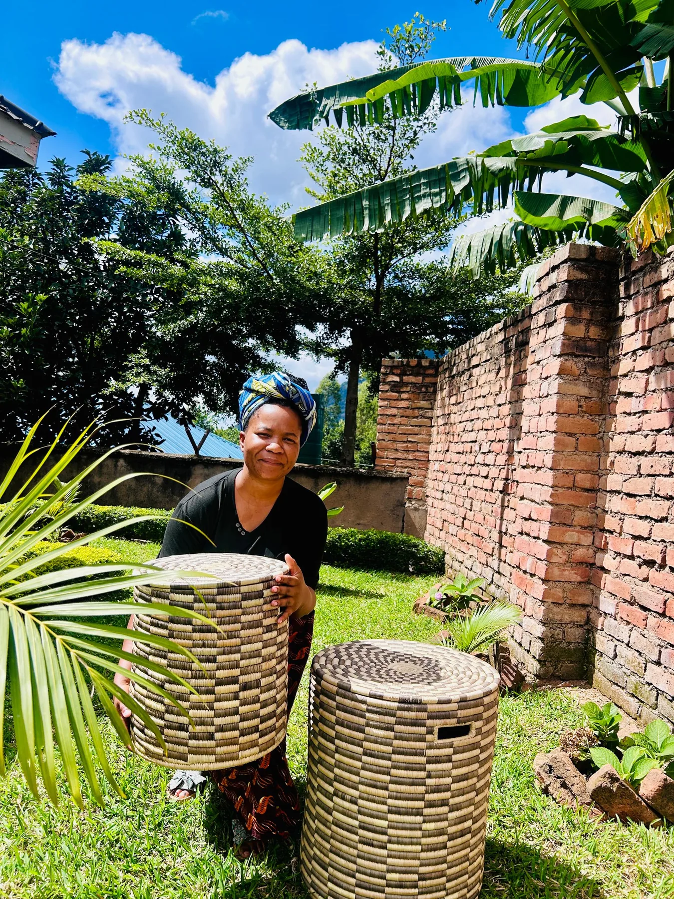
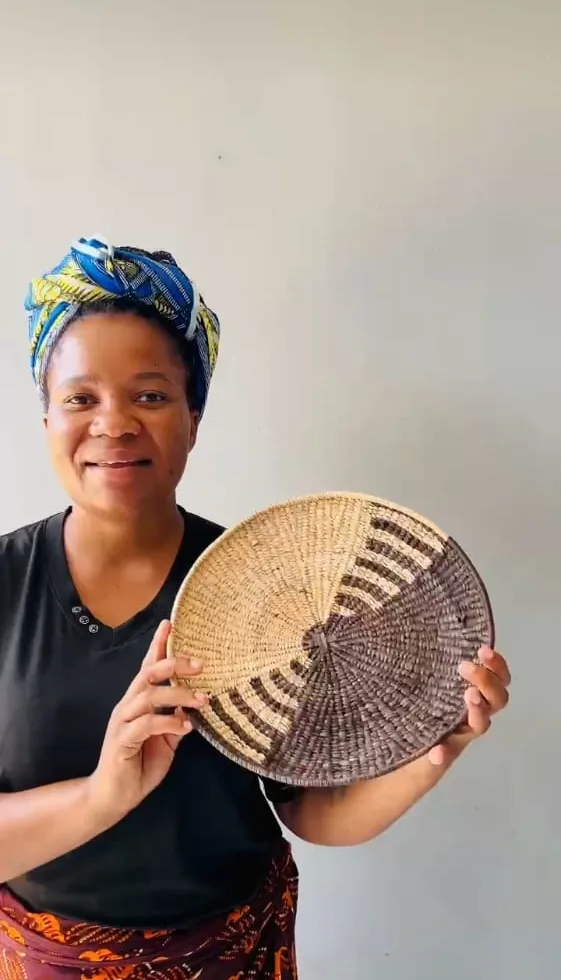
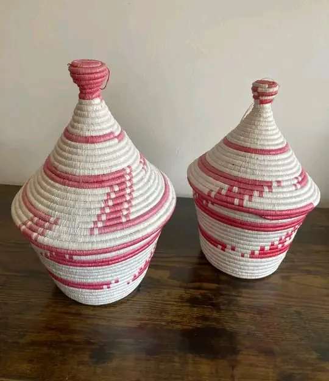
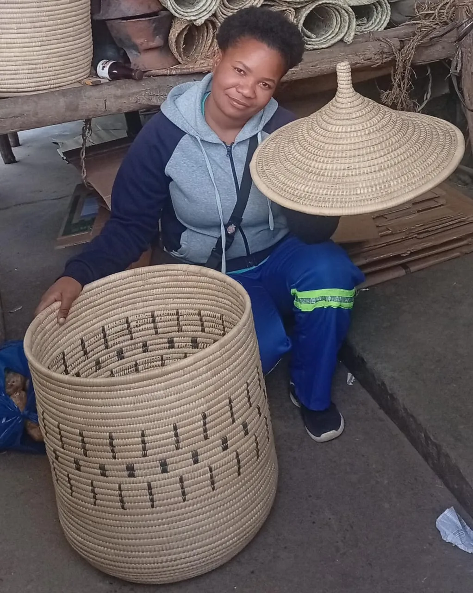
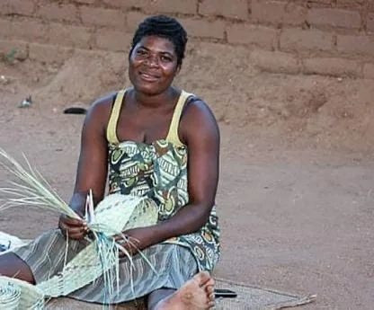
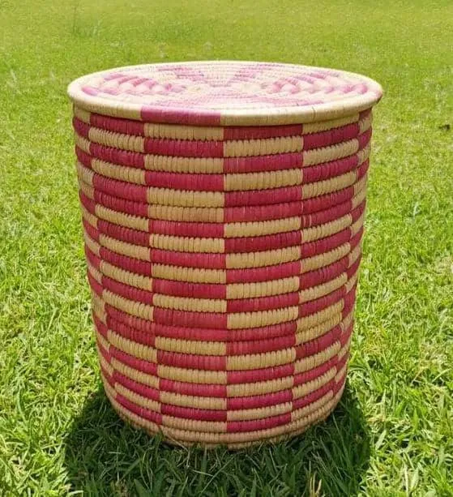
How people live with it
Cooperative work on display in an art gallery in Malawi.
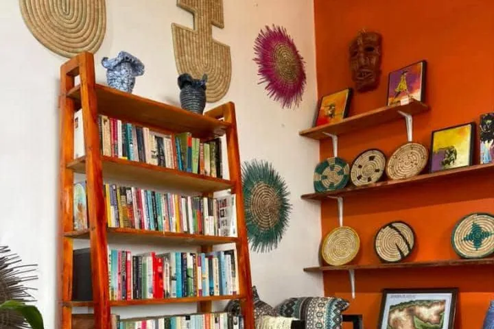
A coiled plate is a wall piece. A lidded hamper is a floor sculpture that happens to hold laundry.
The work is shown as art: on display in an art gallery in Malawi, hung on the wall and set out on shelves rather than stacked in a market pile.
It is also why colour matters, and why design training sits at the centre of the model. Dyed pattern is what carries a coiled basket from a market stall to a gallery wall.
Sold direct: online to individual buyers, and wholesale to galleries, hotels and lodges, and corporate gift buyers — with no chain of middlemen taking the margin that belongs to the weaver.
In her own words
The founder's full investor pitch — the gap, the model, the traction and what the cooperative is asking for. Under three minutes.
Lydia Figuereido presents Lydiana Imagination Solutions herself: why a weaver earning $48 a month is a market failure rather than a fact of life, and how a weaver-owned cooperative changes it.
Impact so far
Early, real and verifiable. These are the cooperative's own achieved milestones — not projections.
Milestone
Eleven women are now working through the cooperative rather than through middlemen.
Milestone
Weavers' pay has more than doubled since joining — the single number this business exists to move.
Milestone
Sold directly online and to business buyers, with quality control and packaging handled by the cooperative.
Route to market
Direct online sales to individuals, wholesale to hotels, lodges and corporate gift companies. No layer in between taking the margin.
The women
Every basket carries a name, a household and a week of someone's work. The cooperative exists so that those three things are paid for properly.
The team
A small Malawian team covering leadership, production quality, sales and strategy.
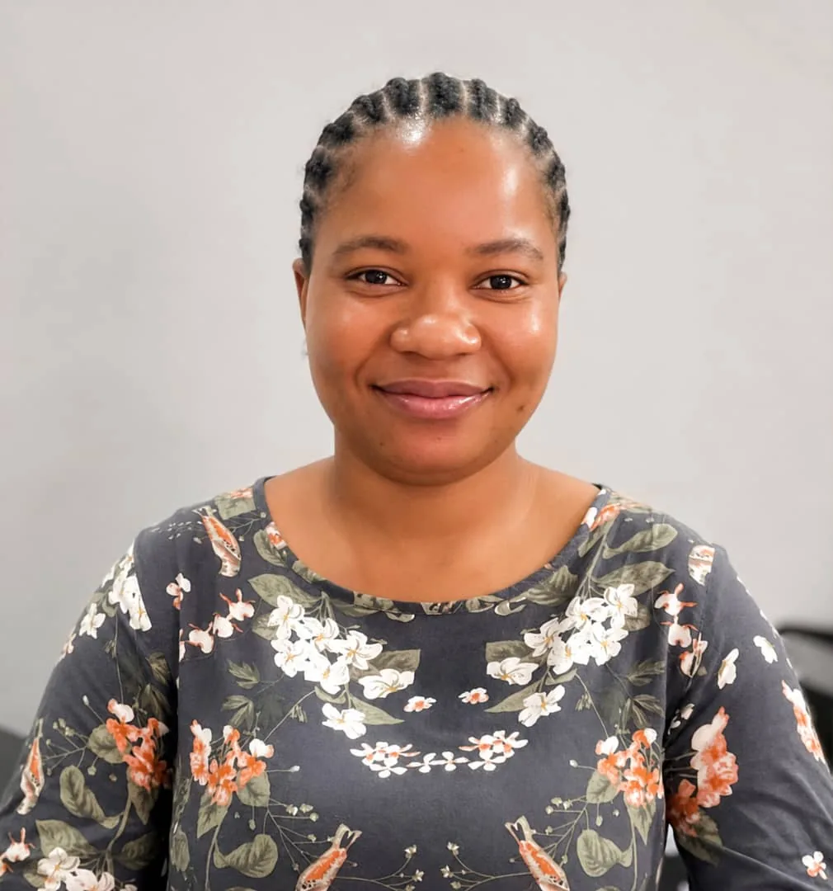
Founder & CEO
BSc Psychology · 3+ years civic leadership
Production & Quality Control Manager
Dip Accounting · 5 years quality assurance
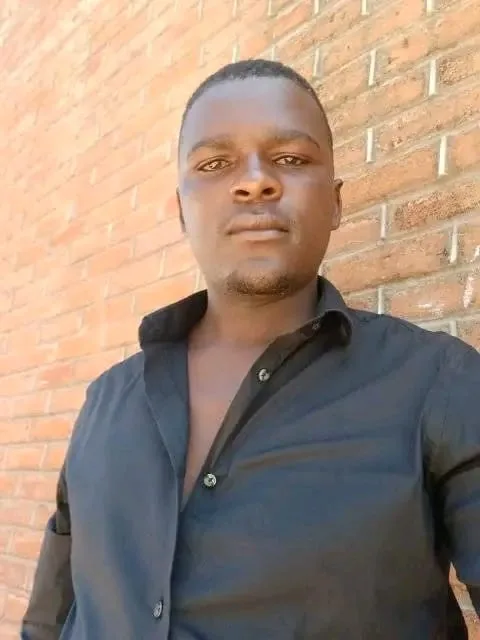
Customer Acquisition & Sales Manager
10+ years sales experience
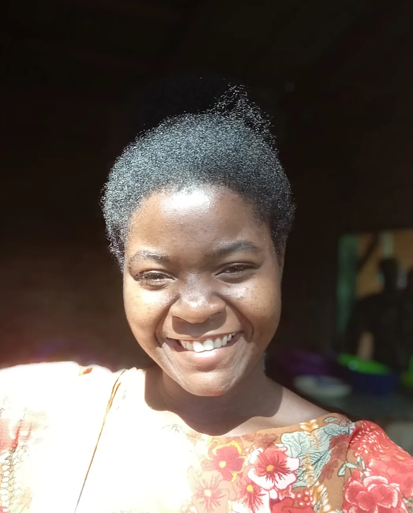
Business Strategy Advisor
6+ years national security & public policy
Why it matters
Coiled basketry in Malawi is passed down, not taught in a classroom. A woman learns it from the woman before her, and the pattern she chooses is a piece of a place. That knowledge is not at risk because people stopped caring about it. It is at risk because it stopped paying.
When a weaver earns what her work is worth, three things follow at once: a household gets a reliable income, a craft keeps its next generation, and the trees the craft depends on become worth protecting rather than clearing. That is the whole argument for this cooperative, and it is why ownership — not charity — is the part that matters.
Buying one basket is not a donation. It is the market working the way it should have in the first place.
Connect
For orders, wholesale enquiries, partnerships or support — reach Lydia and the team directly in Malawi.
Work with us